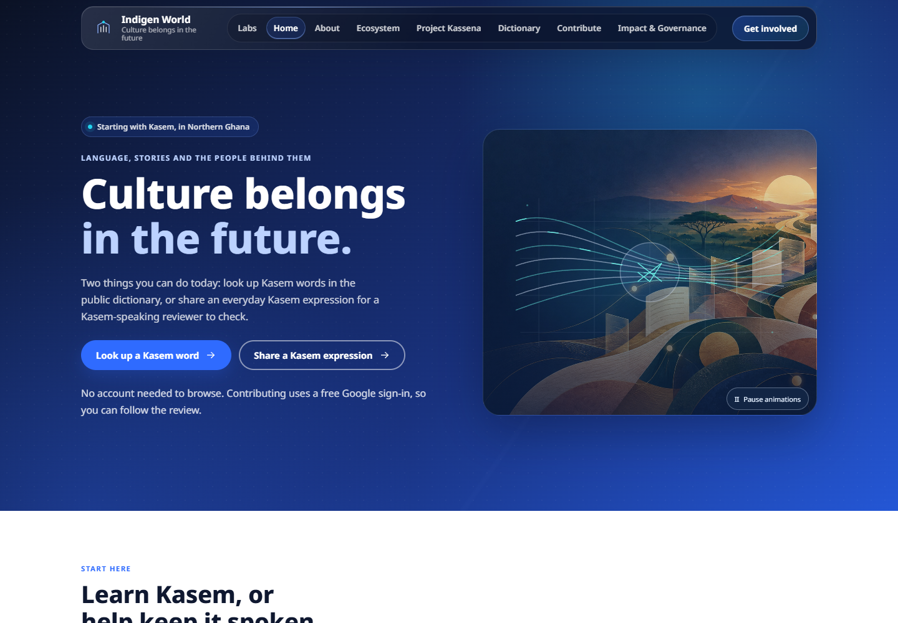
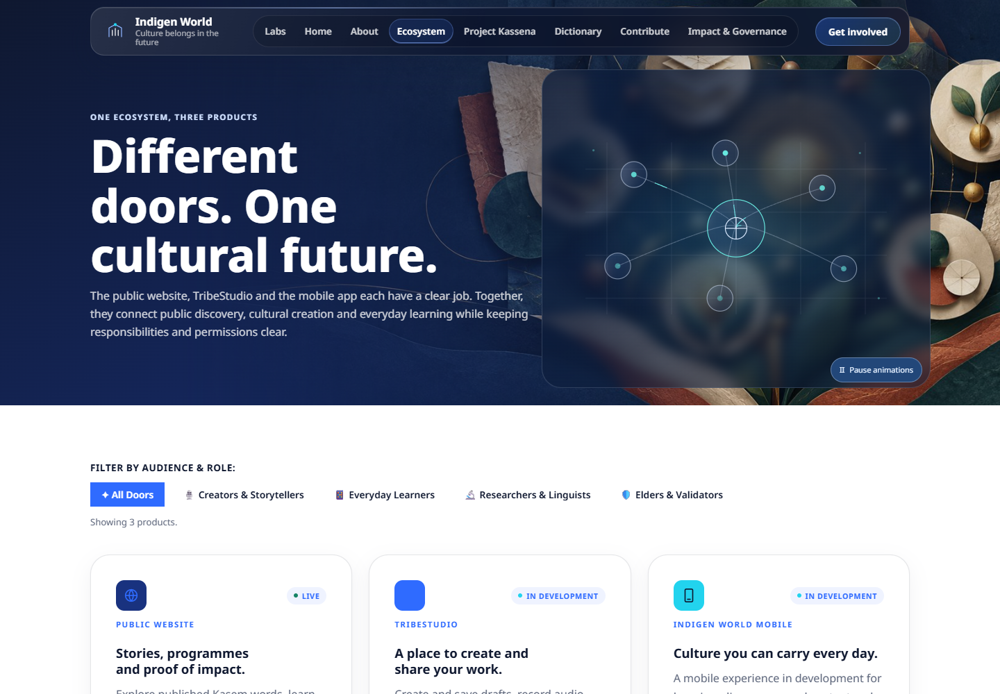
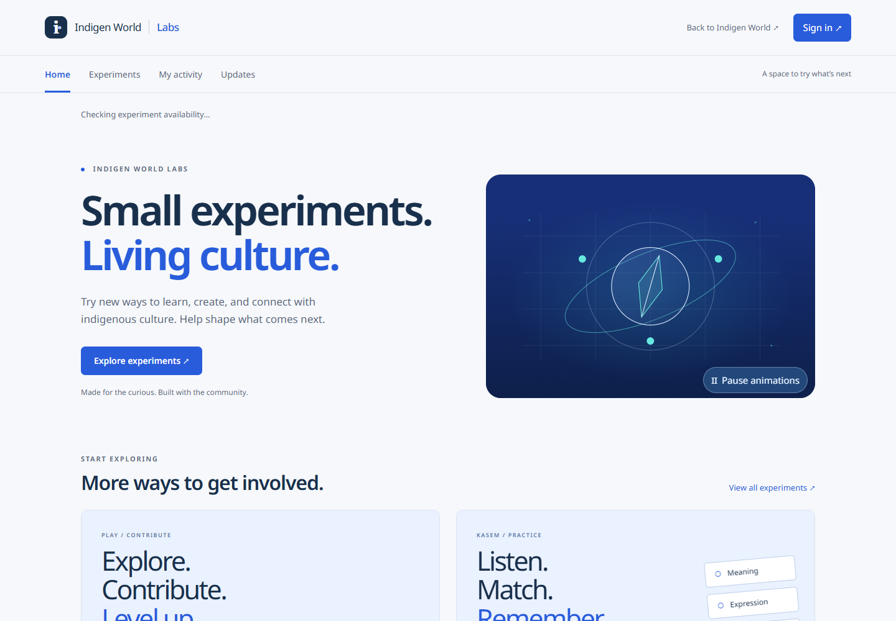
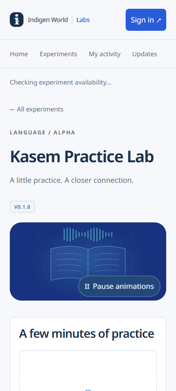

The next public website update brings movement to Indigen World's page headers. Each illustration follows the subject of its page: strands come together on the homepage, connections form across the ecosystem, and a book and sound waves accompany the dictionary.
Learners looking up a word, speakers sharing an expression and visitors finding a way to get involved will see a visual introduction to each page. People who prefer a quieter experience can keep the illustrations still.
This update is implemented in the repository and checked in a local preview. Production deployment is still pending.

About and Project Kassena use growing branches. Contribution pages show a path from a shared record to review. Get Involved brings several paths together. Contact uses conversation bubbles, community pages show people connected, and governance uses a protective shield. Legal, checkout and recovery pages have quieter illustrations suited to their purpose. The recently released privacy page keeps its stewardship animation and now shares the website's remembered pause choice.

Section headings, cards and process steps also appear gently as they enter view. Cards lift slightly when you hover over them or focus their links with a keyboard. The words, buttons, forms and existing routes remain available as ordinary website content.
Labs has its own animations for experiments, language practice, storytelling and Culture Quest. Smaller illustrations sit alongside the task headings on desktop and below them on phones, keeping the next step easy to find. These visual changes do not expand access to an experiment or change its review requirements.


After rollout, simply open the website to see the new headers. Choose Pause animations on an illustration to stop the new artwork and reveals; choose Resume animations to bring them back. The website remembers this choice in the same browser. Clearing its browser storage resets the choice.
If your device requests reduced motion, the website shows still illustrations automatically. Artwork also pauses when it is offscreen or the browser tab is hidden. If an animation cannot load, a still illustration keeps the page usable.
Beyond the Reef keeps its existing song-driven film and playback controls. This update adds no new audio, changes no product availability and is not a production release announcement until deployment is confirmed.